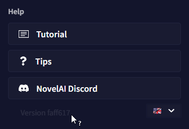

Advanced: Debug Settings
디버그 세팅은 사용자의 계정 문제들을 해결하는데 도움을 줄 수 있는 고급 도구입니다. 일부 번경 사항은 의도치않은 효과가 발생할 수 있으니 디버그 세팅에 접근할 때는 주의해야 합니다.
Enabling Debug Settings
디버그 세팅 메뉴를 활성화하기 위해서는 goose 메뉴 하단의 빌드 해시를 21번 클릭하십시오.
그러고나서 User Settings를 열면 디버그 세팅에 접근할 수 있습니다.

디버그 세팅 메뉴를 비활성화하고 싶다면 디버그 세팅 메뉴 내부의 Hide Debug Settings 버튼을 클릭하십시오. 그러고나면 다시 처음의 빌드 해시 방법을 통해 잠금 해제 할 수 있습니다.
Goose tip: 디버그 세팅은 세션당 한 번만 잠금해제 할 수 있습니다. 그러므로 빌드 해시를 21번 클릭해도 디버그 세팅 메뉴가 뜨지 않는다면, 페이지를 새로고침 해보세요!
Debug Story Download/Deletion
디버그 메뉴를 사용해서 다른 방법으로는 액세스할 수 없는 이야기를 다운로드하거나 삭제할 수 있습니다.
브라우저 주소창에서 현재 선택된 이야기의 ID를 찾으십시오. 주소의 /stories?id=의 우측 부분 전체입니다. 예를 들어, 선택한 이야기의 주소가 https://novelai.net/stories?id=be6a65e2-d7c8-4218-bba3-1234a1234a3a이라면 스토리 ID는 be6a65e2-d7c8-4218-bba3-1234a1234a3a 입니다. 원하는 필드에서 ID를 입력하고나서 Download나 Delete를 클릭하십시오. 다운로드를 클릭한다면 해당 이야기는 즉시 다운로드될 것이고, 삭제를 클릭한다면 확인을 묻는 팝업이 표시됩니다.
Logprobs Count
이 슬라이더를 사용하여 "Token Probabilities" 도구에서 얼마나 많은 대체 토큰을 표시할 지 설정할 수 있습니다. 최대 갯수는 30개입니다.

해당 설정은 영구적이며 로그아웃하거나 디버그 세팅을 숨겨도 계속 적용될 것입니다. 기본값은 10입니다.
Apply & Save
디버그 세팅 메뉴 최하단에는 몇 줄의 코드가 담긴 큰 텍스트 박스가 있습니다. 이것은 사용자의 NovelAI 설정으로서 필요한 경우 수동으로 값을 수정하거나 백업할 수 있습니다.
여기에 쓰여진 텍스트를 수정하는 것은 권장되지 않습니다.